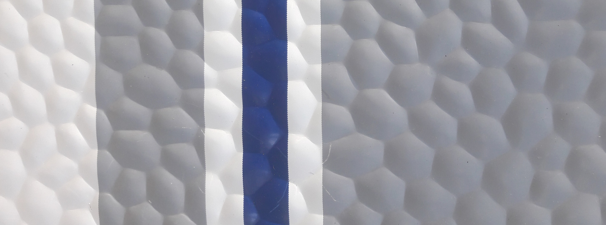
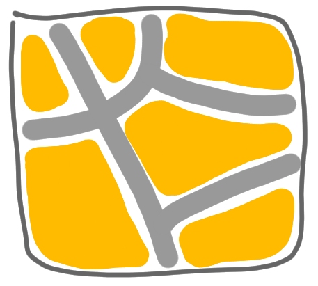
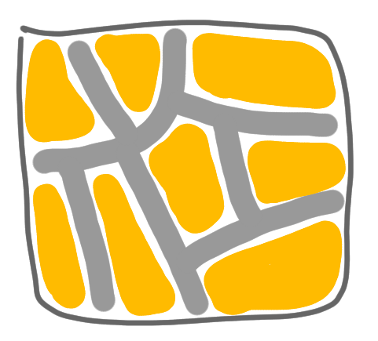
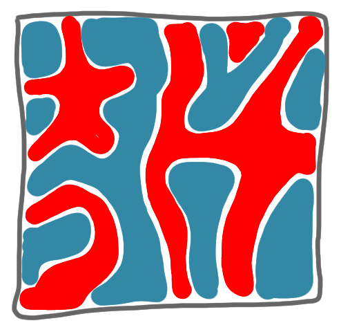
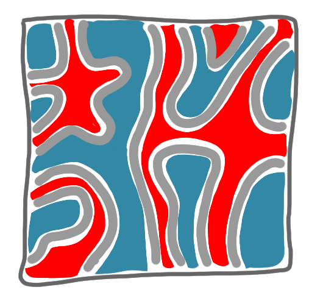

Network decomposition 5: The algorithm
21 May 2020[NOTE: Because of timing issues, I want to have this online now, but it is not fully polished yet. I’ll polish it soon.]
This is the fifth post of a series on distributed network decomposition. The introductory post of this series is here.
In this post, we (finally!) describe the algorithm of the paper of Ghaffari and Rozhon.

Recap of previous episodes
In the previous posts, we saw what a network decomposition is, why it is useful, how to compute it in a sequential model via ball-carving, and why computing only a weak decomposition is not problematic. In this post we show the new algorithm to build a (weak) network decomposition.
Overview
An overview of the algorithm can be given as a comparison with the centralized construction presented in the third post of this series. First, just as in the centralized construction, the color classes will be built one by one, and each color will “take” a constant fraction of the remaining nodes, which insures that we get a logarithmic number of colors. As a consequence, in the remaining of this post, we will be interested only in building the first color class, as the other classes are built the same way. More precisely, as in the centralized construction, our goal is now to build a set of clusters separated by frozen nodes, with small (weak) diameters, and with the constraint that not too many nodes are frozen.
Now, unlike in the sequential construction, we cannot grow balls one after the other (this would take at least diameter time, and the diameter can be large). One could try to first find a good set of nodes, far away one from the others, and to start growing balls in parallel from these nodes. But finding this set of nodes looks as hard as computing the decomposition itself (remember that we build a network decomposition to compute maximal independent sets, among other things).
Hence another technique has to be used.
Separating the graph
Instead of growing clusters, we will separate the graph into smaller and smaller pieces (by freezing nodes).
|  |  |
A key idea of the algorithm is to use the digits of the identifiers of the nodes written in binary. A first attempt in this direction is the following. Let us start by having two sets of nodes, the ones whose IDs begin with 0, and the ones whose IDs begin with 1. We will draw these sets as respectively blue and red. Now if we want to be sure that not two nodes of different colors (red and blue) are adjacent, we can freeze one of the nodes for every bicolored edge. In a good scenario, we get the following picture.
|  |  |
But this is a good case, and in general this technique is bad. First, of course as the identifiers are not required to be uniformly distributed between red and blue, all nodes could be blue. But this is not really a problem: anyway we will have to somehow iterate the construction to all digits one by one, and the IDs are all distinct, thus at some point we will have two non-empty groups. The main problem is the number of frozen nodes: it can be huge, almost all the nodes can be frozen. This is bad for us: we want to get a color class that contains a constant fraction of the nodes of the graph. (Note that even if you could get only half of the nodes frozen at this step, as we will iterate this for all digits, it wouldn’t work.)
So now we have to answer the question: how to get a small number of frozen nodes when separating the red and the blue nodes?
Before going into that, let us restate at which level of the explanation we are (as there are quite a lot of levels). We want to build a network decomposition, for this we first want to build a first color class, and for this we first want to separate the nodes whose identifiers start with 0 (the blue nodes in the pictures) and the nodes whose identifiers start with 1 (the red nodes in the pictures)
Ball carving is back
We know a technique to separate some parts of the graph without freeing too many nodes: growing a ball like in the third post (that is, “ball carving”). The idea is to consider the blue and red nodes in a non-symmetrical way: blue nodes are starting point for ball carving, and red nodes want to join such balls. That is, every blue node starts as a one-node ball, and then, until this is not possible:
- the (non-frozen) red nodes that have at least one blue neighbor propose to join the ball of one of these blue nodes (arbitrarily),
- the blue balls accept if the number of red nodes proposing is large enough, and reject otherwise,
- if the blue ball accepts, the red nodes proposing become blue, if it rejects, they freeze.
When a red node joins a blue ball, we add an edge to the Steiner tree of this ball to link this node. Also this node change its ID, to take the identifier of the ball. Hence these numbers are not really identifiers any more, and from now on we’ll say label.
After this ball carving process we have:
- more blue nodes and less red nodes,
- no edge between a red and a blue node,
- not too many frozen nodes,
- clusters whose Steiner tree have at most logarithmic diameter.
Which is pretty good! But of course, the clusters of same color can be adjacent, and we don’t want that. We have to refine this partition. Note that now the blue and red nodes will live in two independent worlds, separated by frozen nodes.
The second digit
Now we will go to the second digit of the labels. There are quite a few things that are simpler for the first digit, thus we cannot simply say “do it again”.
First of all forget about the colors of the nodes given by the first digit, and color them with the color of the second digit (blue for _0 and red for _1). This means that we have again adjacent red and blue clusters: either two clusters that were previously blue whose labels differ on the second bit, or two nodes that were previously red (and are also clusters restricted to one node), also with different second digit.
A natural way to iterate the construction would be the following: consider the clusters as the nodes of the previous phase and make the same construction at this level. That is, the red clusters propose to the blue clusters etc. But this would not be good: we could freeze an arbitrary red cluster because it proposed to blue clusters with few neighbors, and this red cluster might be huge.
What we do instead is to make the red nodes act individually without coordination inside the red cluster (but keep the blue nodes acting as a cluster). That is: every red node that is adjacent to a blue cluster proposes to join this cluster (breaking ties arbitrarily), and is accepted if enough such nodes want to join. And we do the ball carving this way. A red node, if it joins a blue cluster, will be linked the Steiner tree of this cluster, and take the label of this cluster.
A few non-intuitive things
Now, there are a few non-intuitive things going on. First, suppose that after the first digit, we had a nice cluster, and that the second digit of its label is a 1. Then, this cluster is basically dismantled during the phase corresponding to the second digit, because many nodes of this cluster might be eaten by adjacent blue clusters. This looks counter-intuitive but seems necessary to separate clusters further.
Second, it is possible that nodes having the same label, do not form a connected component anymore. Indeed, consider a cluster that was blue before, and now is red. With the ball-carving, some nodes of this cluster become blue, some nodes are frozen and some nodes are still red and separated from blue nodes by frozen nodes. It is possible that these red nodes (that have the same labels) form disconnected islands that were linked by nodes that are now blue or frozen. But they still form a cluster: we have not erased the previous Steiner tree, thus they are still linked. And this is important: at the next digit, this label may give color blue, and then these nodes have to act in a coordinated way. This is why we need to talk about weak decompositions and not strong ones. One more non-intuitive thing is that, because of the same reason, the nodes of a cluster may have a label that is the ID of a node that is not anymore in the cluster.
That’s it!
This is pretty much the algorithm! Then you just iterate on the digits of the labels, and at the end, the all clusters are separated by frozen nodes, have a controlled weak diameter, and not too many nodes have been frozen. This way we get the first color class, and then we can go to second color class,etc.
By setting the right parameters for the ball carving, you get an algorithm that use polylogarithmic time to build a network decomposition with logarithmic weak diameter and a logarithmic number of colors.